Ten sam ekran w każdym kierunku: „pierwsze liczenie” (świeża instalacja) i „sweter w toku” (rękaw, rząd 48 to zamykanie 7 z 8). Dane i teksty: [PRZYKŁAD]. Treść: na iOS SF Pro; w makiecie zastępczo Source Sans 3 (kroju treści nie oceniamy na tych zrzutach). Makiety: docs/design/kierunki/*.html; wszystkie warianty (jasny, ciemny, 320 pt, AX5): docs/design/kierunki/zrzuty/.
Licznik to wydruk wzoru, na którym zaznaczasz rzędy ołówkiem: każdy rząd stawia kreskę, piąta przekreśla cztery, a rząd z instrukcją jest zakreślony.
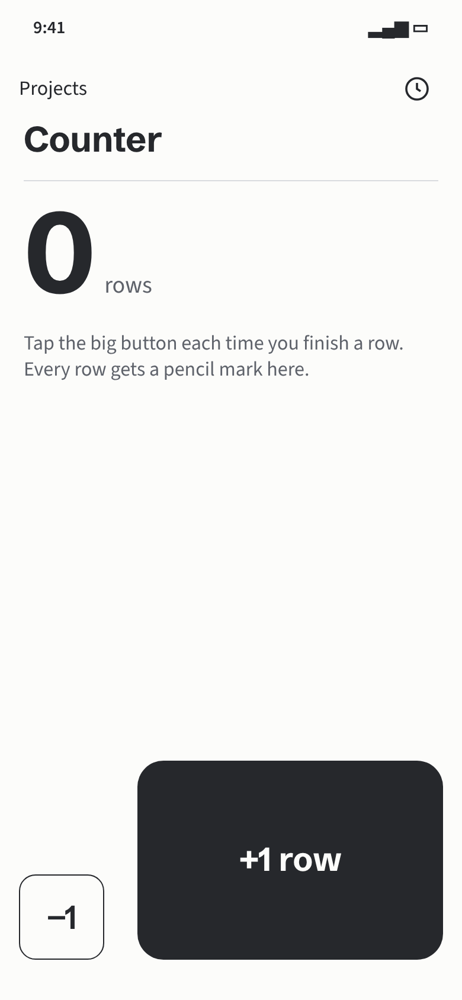
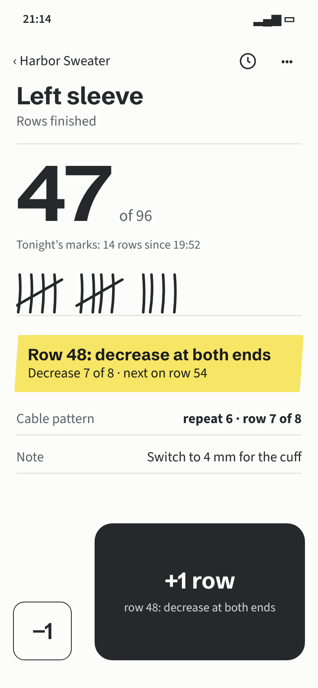
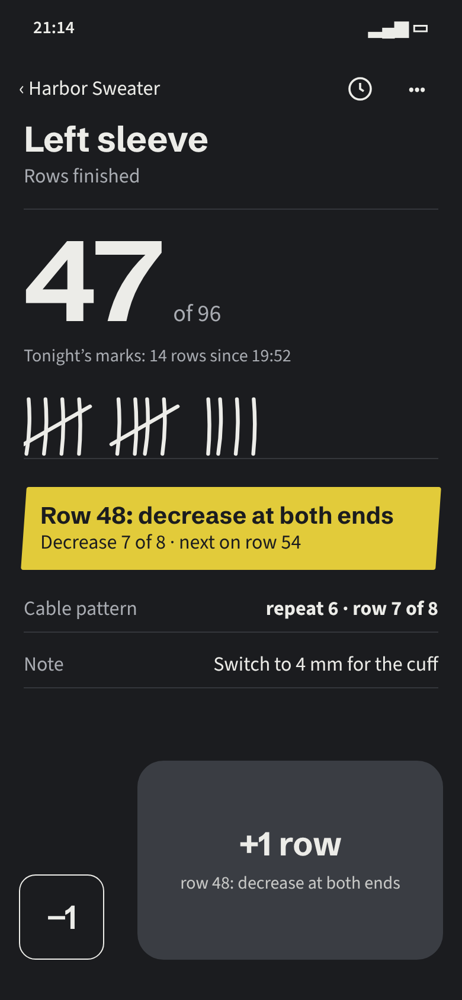
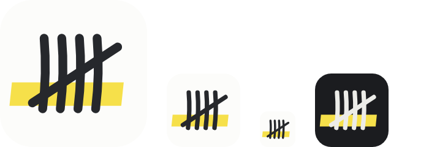
Najmocniej za: to dokładnie to, czym dziergający liczą bez aplikacji („tick marks on my printed patterns”), a nikt w kategorii tego nie robi; najspokojniejszy i najłatwiejszy do pełnej dostępności.
Krój tytułów: Schibsted Grotesk · paleta: papier, grafit, ołówek HB, zakreślacz.Licznik dzierga z tobą: każdy rząd dokłada rząd oczek w kolorze twojej włóczki, a znaczniki z zamkiem wiszą tam, gdzie wzór każe coś zrobić.
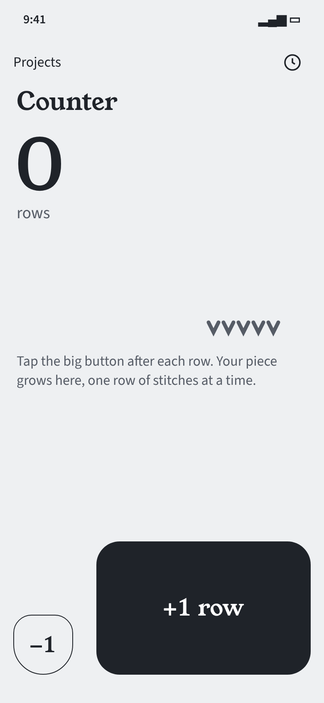
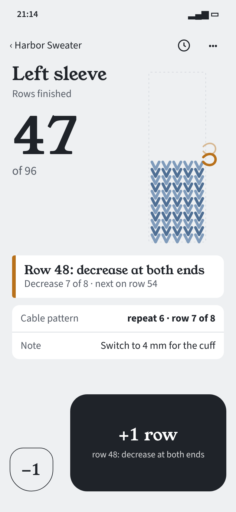
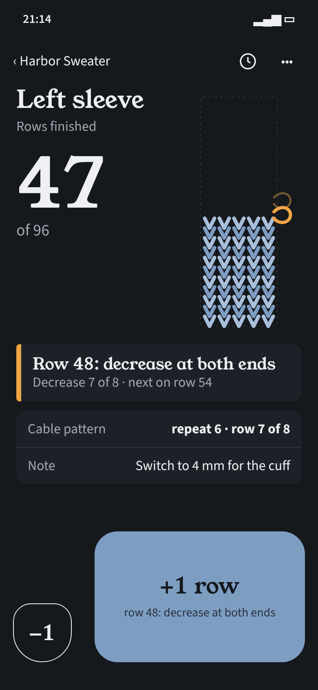
Najmocniej za: element firmowy niesie najwięcej danych naraz (postęp części, cel, najbliższe instrukcje, kolor włóczki projektu); najbardziej „magiczny” moment +1.
Krój tytułów: Young Serif (cyfry wersalikowe) · paleta: szary filc, tusz, kolor włóczki, znacznik.Licznik z torby, przebudowany na ekran: bębenek z cyframi obraca się o jeden ząbek na rząd i pokazuje, co będzie dalej; blokada jak dźwignia w małym liczniku.
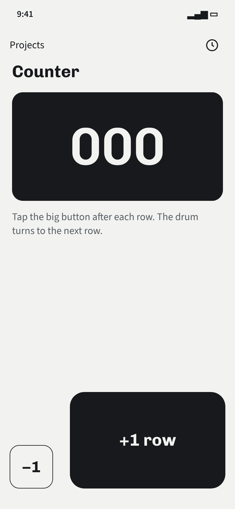
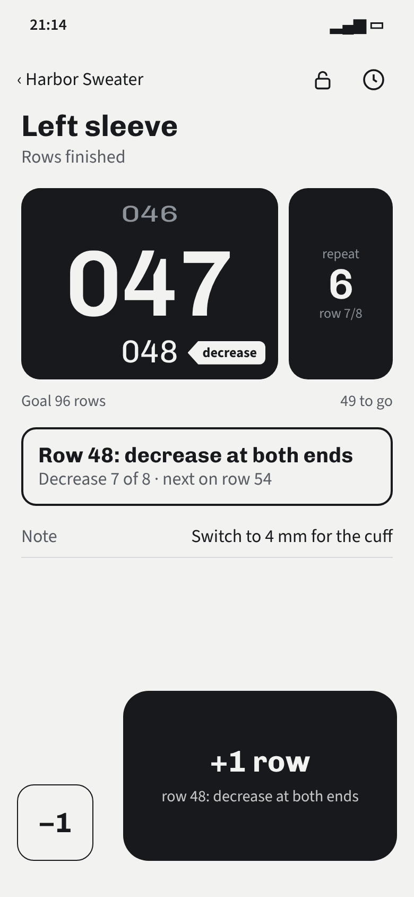
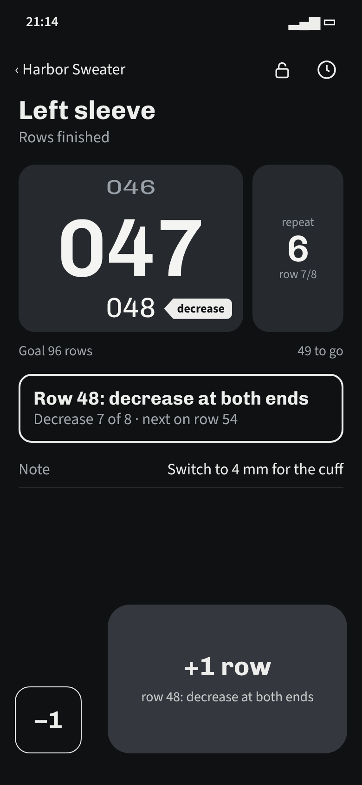
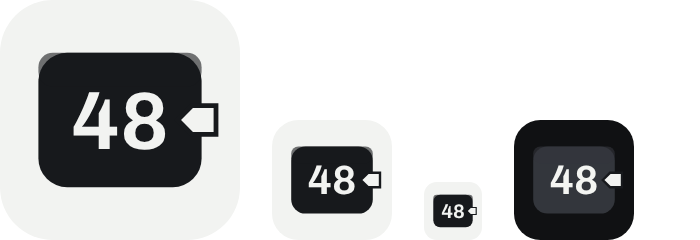
Najmocniej za: najlepszy odczyt z odległości stojaka (kontrastowy blok liczby, cel i „49 to go” w jednej linii); jedyny pokazuje blokadę na ekranie.
Krój: Chivo + Chivo Mono (cyfry bębenka) · paleta: obudowa, bębenek, języczek.docs/design/01-swiat.md, napisane przed kartami kierunków)| Pole | A · Kreski | B · Dzianina | C · Bębenek |
|---|---|---|---|
| Paleta | bez pokrycia z (a) i (b); ciemny motyw „grafit + jeden żółty” blisko „prawie czarne + jaskrawy akcent” (krytyk) → do E3: zakreślacz przygaszony w ciemnym | bez pokrycia; ochra znacznika nie jest terakotą (#B8701A wobec #D97757) | pokrycie z kalibracją: czarny walec + jeden cynobrowy akcent → zmienione: języczek jasny z wcięciem, znaczenie niesie kształt |
| Krój tytułów | neutralny grotesk (nie Inter/Nunito); słabsza tożsamość kroju → wybór kroju po E2 | kontrastowy szeryf, ale bez kremu i terakoty (1 z 3 cech kalibracji); cyfry nautyczne poprawione na wersalikowe | mono tylko na cyfrach bębenka (cyfry licznika z dziedziny), decyzja do zapisu |
| Element firmowy | kreski piątkowe (nie motek, nie pierścień); krytyk: kreski są też w licznikach nawyków, ale tu siedzą na wydruku wzoru z zakreślaczem | kolumna oczek „V” ze znacznikami; krytyk: blisko „pionowego paska postępu” | bębenek; krytyk: na zrzucie wygląda jak kafel ze statystyką, a sam bębenek ma konkurent (Knit Row Counter) |
| Układ | pokrycie we wszystkich: „duża liczba + mała etykieta” i strefa +1 na dole. Strefa +1 to wymóg kontekstu (ręce zajęte, NFR-PIE-001), zostaje; okrągłe −/+ z karty (a) usunięte (B: −1 z okręgu na owalny klocek); do E3: liczba połączona z elementem firmowym zamiast „bohatera” | ||
| Ruch | kreska rysuje się (120 ms) | rząd oczek wsuwa się od dołu (180 ms) | bębenek przeskakuje o ząbek (140 ms) |
| Soczewka | Najlepszy | Najważniejsze uwagi i co już poprawiono |
|---|---|---|
| Ręce zajęte, 40–70 cm, lampa | C | instrukcja rzędu 48 nie była w przycisku → poprawione (podpis +1 = treść instrukcji); −1 12 pt od +1 → odstęp 28 pt; w C rząd 048 łatwo pomylić z bieżącym, zera wiodące wydłużają odczyt (E3); ciemny motyw: szary +1 w A i C za słaby, niebieski +1 w B razi (E3) |
| VoiceOver i AX5 | A (najłatwiej w pełni dostępny) | etykieta „+1” inna niż tekst przycisku (WCAG 2.5.3) → poprawione; C: rząd następny ściśnięty i przyciemniony → poprawione; B: przy AX5 dzianina musi zejść pod liczbę, znaczniki odróżnia sam kolor/krycie (E3); A: zakreślacz w ciemnym motywie najjaśniejszy (E3) |
| Krytyk kliszy | A, potem B, potem C | wspólny szkielet „liczba + podpis”; C po zakryciu nazwy „nie da się” rozpoznać → cynober zmieniony; B: jednakowe białe karty i szeryf „ciepły” (E3) |
| Nowa osoba | A | „7 of 8” bez rzeczownika → „Decrease 7 of 8”; 14 kresek obok 47 wyglądało jak błąd → podpis nad kreskami; C: „000” i „001” jak dwie liczby → tylko 000; B: znacznik jak cyfra „3”, kropki na starcie → znacznik w kształcie zapinki, nabrane oczka na starcie |
Dlaczego (funkcja, nie gust): trzy z czterech soczewek wskazały A (nowa osoba, krytyk kliszy, dostępność); A odwzorowuje to, czym ludzie liczą dziś (kreski na wydruku, zakreślacz z BR-WZR-008), więc nowa osoba rozumie go od razu; jest najodrębniejszy w kategorii i jedyny, w którym grafika nie musi nieść danych niedostępnych w tekście.
Co warto przenieść: z C linijkę „Goal 96 rows · 49 to go” (najczytelniejsza dla nowej osoby i z odległości) i widoczną blokadę; z B kolor włóczki projektu jako jedyny kolor z danych (np. kolor kresek albo krawędzi zakreślenia), jeśli właściciel chce cieplejszego charakteru.
Ryzyko A: kreski piątkowe znane są też z liczników nawyków (krytyk); tożsamość niesie więc połączenie wydruku, ołówka i zakreślacza, nie same kreski. Krój tytułów do wyboru po E2 (ok. 5 krojów z liternictwa wzorów).
Opcjonalnie (właściciel, ok. 1 h): test pięciosekundowy albo preferencji z pięcioma osobami dziergającymi; działanie zewnętrzne tylko za zgodą (P-052 (2): bez testów z ludźmi).